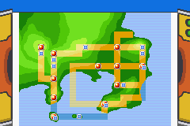
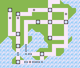
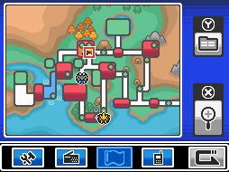

Cartes de Kanto à comparer
Actuelle : carte de ta V1
Town Map de FireRed/LeafGreen, recadrée sans cadre de console, agrandie.

1 · FireRed / LeafGreen (240 × 160)
La même carte que la tienne, avec le cadre de la console. Source :
Bulbagarden Archives, KantoTownMap.png
.

2 · Rouge / Bleu / Jaune (160 × 136)
La Town Map de 1996, deux tons et traits nets. Source :
Bulbagarden Archives, Kanto_Town_Map_RBY.png
.

3 · HeartGold / SoulSilver (254 × 190)
La carte du Pokégear, en couleur, avec l'interface de la DS autour. Source :
Bulbagarden Archives, Pokégear_Map_HGSS.png
.